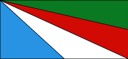

Fundacion
Fundada el 7 de mayo de 1946, Jardín América es una ciudad y municipio argentino, ubicada en el departamento San Ignacio de la provincia de Misiones. Cuyo nombre fue inspirado en el barrio "Jardim America" de la ciudad de São Paulo.
Turismo
Saltos del Tabay: Principal atractivo turístico de la ciudad y se ubica a unos pocos kilómetros de Jardín América y a 2 kilómetros de la Ruta Nacional 12, sobre el arroyo del mismo nombre. Se destaca por las caídas de aguas que tienen un promedio de 10 metros. Teléfono: 03743 15-40-0421
Baden-Baden: Un complejo de piletas y quinchos muy completo, que cuenta tambien con restaurante y sectores infantiles, ademas de variedad de toboganes y fuentes. Se encuentra a la vera de Ruta Nacional 12, a 2 kilómetros del ingreso a Jardín América. Celular: 3743 482-081 • Celular: 3743 482-083La Isla: Un complejo que otorga una pileta natural, arroyos, parrillas, baños y espacio para acampar, ideal para pasar en familia. Dirección: Av. Islas Malvinas, a 3 km de la Ruta Nacional 12 Teléfono: ( 03743 ) 15 537145
Mapa

Emblemas del municipio
Bandera
Escudo